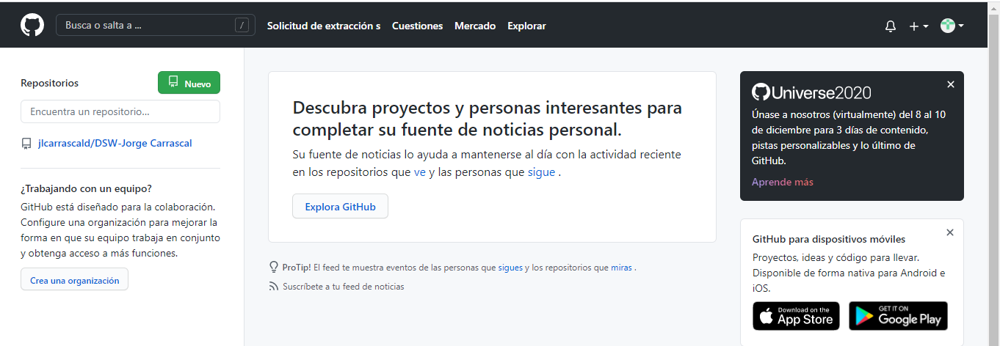
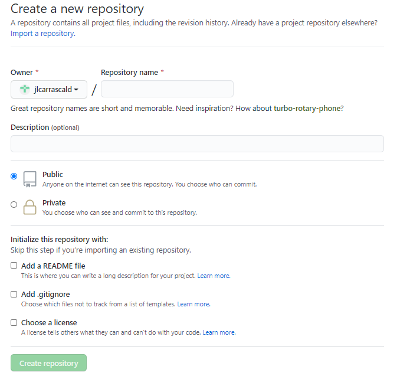

GIT
GIT un sistema de control de versiones de código abierto actualizado, fácil de usar.
Este presenta herramientas de control de versiones internacionalmente, es decir que lo
emplean en común munchos desarrolladores a nivel mundial, para realizar repositorios.
GITHUB
GITHUB es una herramienta que crea, contiene repositorios de softwares y comparte el
código de una manera rápida; este es gestionado por el sistema de control de versiones GIT.
Israel Alcázar, M. A. (03 de Junio de 2014). Introducción a Git y Github.
Obtenido de Desarrolloweb.com: https://desarrolloweb.com/articulos/introduccion-git-github.html
Repositorios en GITHUB
Para poder utilizar GITHUB debes crear una cuenta, luego de tener tu cuenta ya puedes iniciar,
dar clic en el boton verde que dice "New", colocar un nombre a tu repositorio, si deseas puedes
escribir una descipcion de tu nuevo repositorio, opcional hacerlo público o privado, y por ultimo
dar clic en el boton verde que dice "Create repository"
|

(Imagen Autoria Propia)
|

(Imagen Autoria Propia)
|